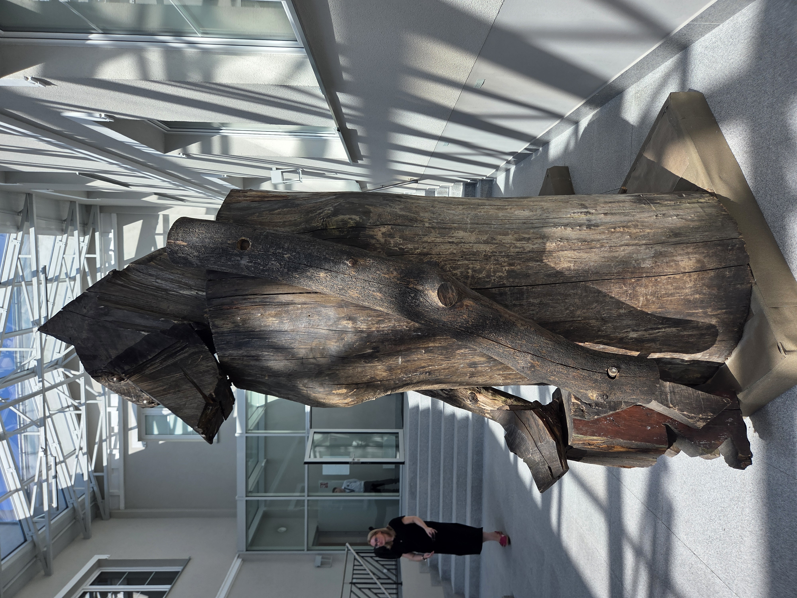
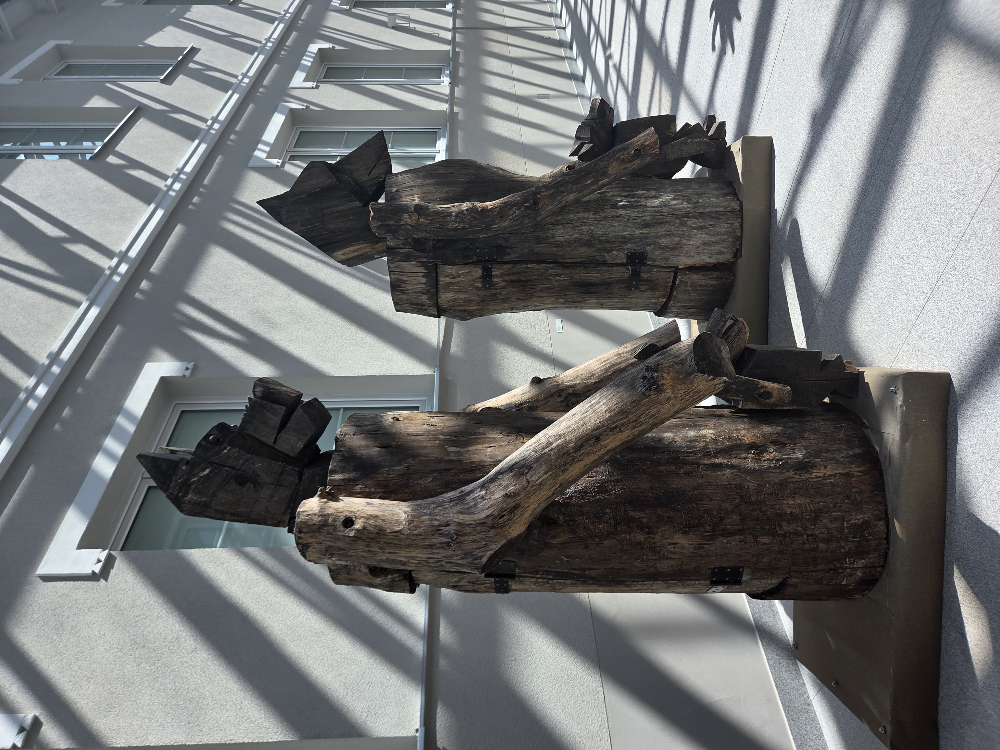
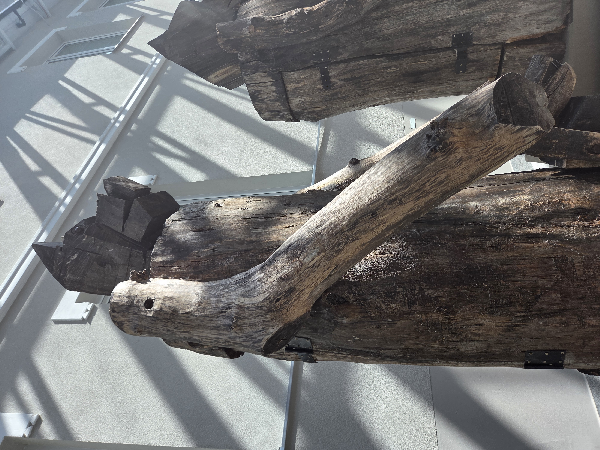
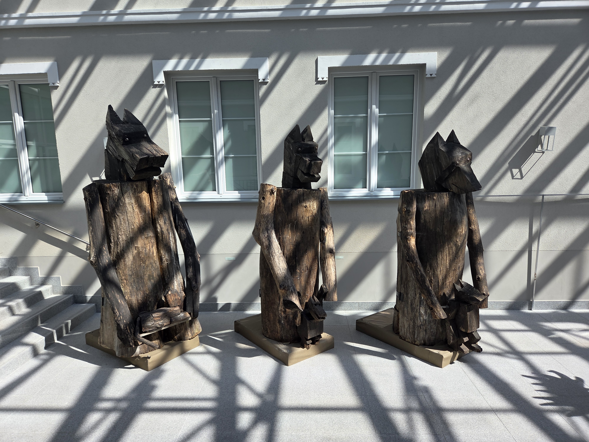
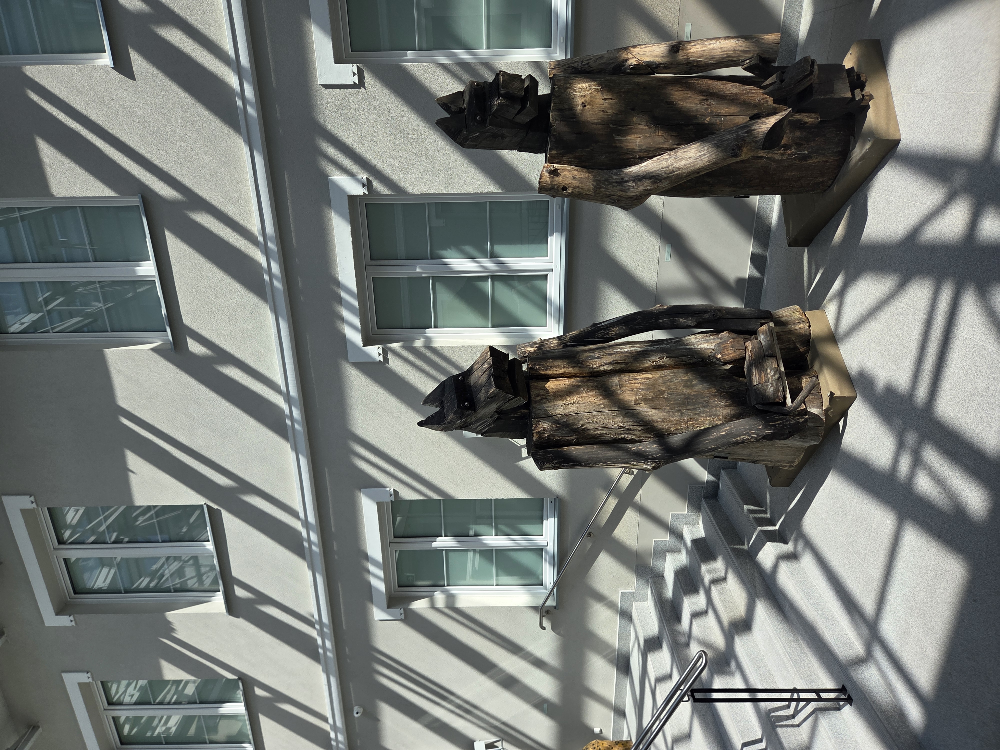

Prototyp Wilczej Machiny Oblężniczej — dzieło Profesora Sznaucera
(fragment kroniki budowniczych, spisany dla potomnych)
W czasach, gdy mury wrogich twierdz zdawały się nie do zdobycia, a serca rycerzy trawiła tęsknota za zwycięstwem, z pracowni starego majstra wyszło coś, czego świat jeszcze nie widział — Żelaznowilcze Chodziory, jak nazwał je sam ich twórca, Profesor Sznaucer, mistrz drewna, okuć i zapomnianych już dziś sekretów mechaniki.
Karta prototypu
Nazwa robocza: Wilcza Machina Oblężnicza, Model I (linia "Straż Lasu")
Konstruktor: Profesor Sznaucer, Warsztat Pod Sękatym Dębem
Materiał główny: starodrzew dębowy, hartowany dymem i czasem, jak przystało na coś, co ma pamiętać więcej bitew niż niejeden rycerz
Okucia: kute żelazo, ciemne jak wilcza sierść o północy, łączące pradawne kończyny konstrukcji w jedną, milczącą całość
Napęd: wewnętrzny mechanizm korbowo-dźwigniowy, poruszany siłą ukrytych w cielsku maszyny kołowrotów — Profesor twierdził, że „serce Wilka bije żelaznym rytmem, a nie ludzkim tchnieniem”
Pojemność: do 30 rycerzy w komorze transportowej, ukrytych w drewnianym cielsku niczym w brzuchu prawdziwej bestii
Obsługa: 10 techników odpowiedzialnych za napęd i sterowanie
Osłona: 5 żołnierzy przydzielonych do ochrony maszyny w marszu
Zasięg operacyjny: do 200 metrów od linii wyjścia
Wysokość: 6 metrów — tyle, by zajrzeć wrogowi prosto ponad blanki






Uwagi własnoręczne Profesora Sznaucera
„Trzy Wilki zbudowałem, nie jednego, bo samotny wilk to tylko legenda, a stado — to już armia.”
„Głowa musi patrzeć czujnie, uszy wyostrzone jak groty strzał — inaczej wróg pozna, że to tylko drewno, a nie prawdziwa bestia z Puszczy Zapomnianych Królestw.”
„Okucia kładłem tam, gdzie drewno najsłabsze — bo nawet legenda potrzebuje żelaznego kręgosłupa.”
„Niechaj nikt nie pyta, skąd czerpię natchnienie do takich konstrukcji. Wilk milczy, dopóki nie nadejdzie jego pora.”
Trzy takie Wilki stanęły w rzędzie tego dnia, gdy słońce sączyło się przez szklany dach starej hali — jakby czekały tylko na rozkaz, by ruszyć w stronę murów, których jeszcze nikt nie zdobył.